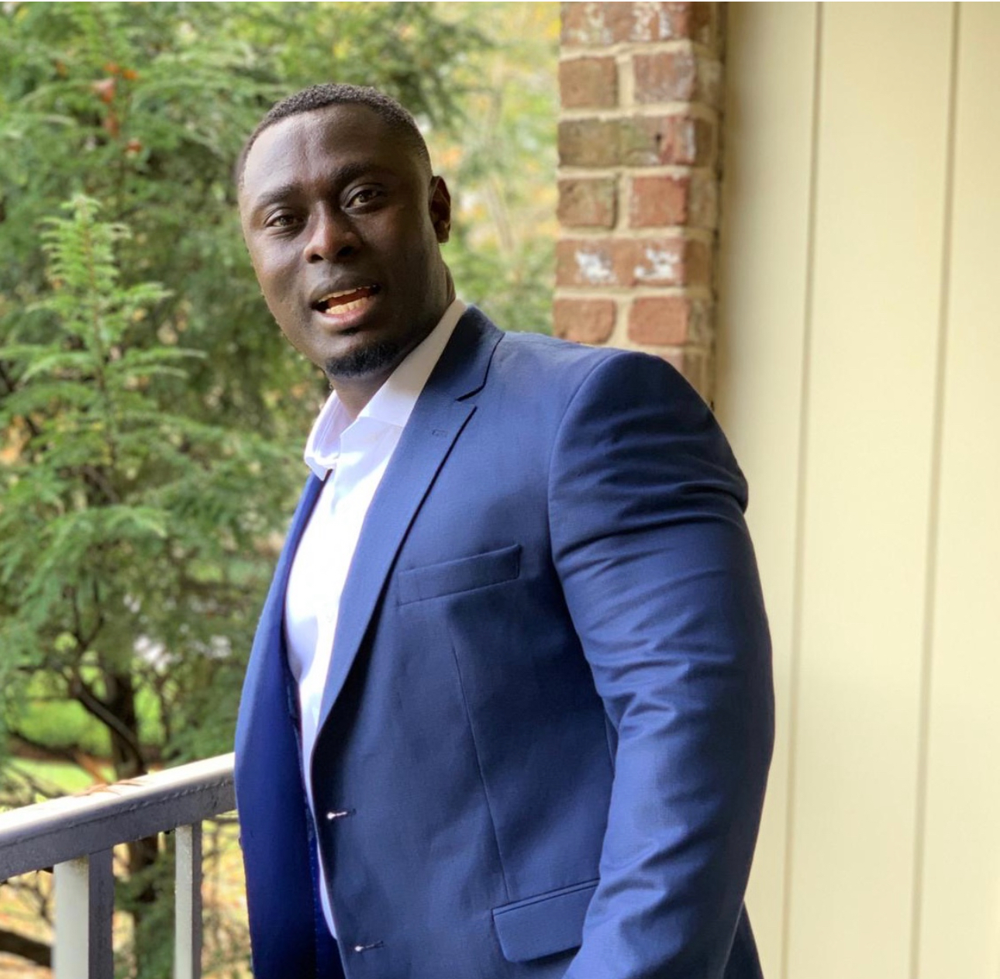

(785) 492-8758
Jgyapong@ymail.com
Experienced and compassionate Registered Nurse with
expertise in medical procedures, patient care, and treatment planning.
Skilled in ensuring a safe and comfortable healthcare environment.
Strong communicator and collaborator
dedicated to patient well-being and optimal outcomes. U.S.
Army veteran with strong organization and interpersonal skills – proven ability to carry out multiple task
and good teams building in timelines manner.
Chamberlain University, North Brunswick, NJ Bachelor of Science - Nursing
New Jersey Institute of Technology, Masters in cybersecurity-ongoing
Professional Registered Nurse License November 2021
CPR Certification; Basic Life Support June 2023
Assess patients by discussing their mental health conditions with them. Administers and notes reactions to psychotropic drugs and other medications Provide treatment to patients and ensure medications are correctly administered Work to understand the source of patients’ disorders Conduct one-on-one therapy sessions Prepare patients’ records and maintain them effectively. Conduct risk assessments on patients.Monitor patient progress and ensure all legal requirements are met
Maintained accurate, complete health care records and reports. Administered medications to patients and monitored them for side effects and reactions. Prescribed assistive medical devices and related treatments. Prepared patient for surgical procedures. Recorded patient vital signs and medical information. Ordered medical diagnostic and clinical tests per doctor’s direction. Monitored, reported, and recorded symptoms or changes in patient conditions. Administered intravenous and non-intravenous medications. Assessed, implemented, planned, or evaluated patient nursing care plans by working with healthcare team members. Modified patient health treatment plans as indicated by patient conditions and responses
Guarded and protected people and properties under threat. Used teamwork and employed convoy defense techniques. Helped in disaster relief and emergency management efforts. Operated all wheel vehicles and equipment over varied terrain and roadways. Managed load, and safety of personnel being transported. Overseed and checked proper loading and unloading of cargo on vehicles and trailers. Identified, corrected, and reported all vehicle deficiencies. Prepared vehicle for movement and shipment by air, rail, or vessel.